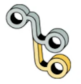
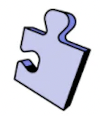
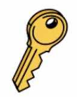
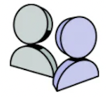
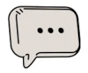

How can we help?
|  |
Branches Abstract Branches lets you manage version, and document your design in one placeLearn more --> |
|  |
Manage organizations, teams, and projects Use abstract organizations, teams, and projects tom organize your people and your workLearn more --> |
|  |
Authenticate to Abstract Set up and configure SSO, SCIM, and Just-in-time provisioningLearn more --> |
|  |
Manage your Account Configure your account settings, such as your email, profile details, and passwordLearn more --> |
|
Manage billing Change subscriptions and payment detailsLearn more --> |
|
|  |
Abstract support Get in touch with a humanLearn more --> |